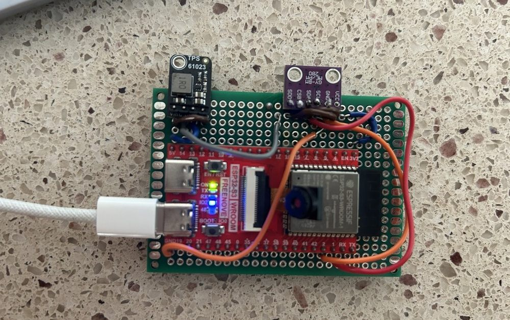

Model Rocket & ESP32 Flight Computer
A rocket built from scratch, a flight computer built from parts instead of bought, and a log pulled off the flash afterward that matched the pre-flight simulation to 0.2%.

Stack
Avionics
ESP32-S3, BME280 over I²C, TPS61023 Boost Converter
Firmware
Embedded C++, 20 Hz Logging to LittleFS Flash
Airframe
SOLIDWORKS, OpenRocket, 3D Printing
Recovery
Parachute on Motor Ejection Charge
The build
- Built the flight computer from discrete parts on soldered perfboard instead of buying an off-the-shelf altimeter — ESP32-S3, BME280 barometer on I²C, TPS61023 boost converter for the rail
- Firmware averages ten pressure samples on boot for a ground baseline, then logs time, pressure, temperature, and derived altitude at 20 Hz with the pressure reading oversampled 16×
- Each power cycle opens a new
flight_N.csv, flushed to flash every second, so an unexpected power loss costs at most one second of data and never overwrites an earlier flight - Serial console at 115200 baud lists stored logs, dumps them for retrieval, erases flash, and pauses capture
- Fin can, nose cone, and launch-rail clamp modeled in SOLIDWORKS and 3D printed; recovery is a parachute deployed by the motor's ejection charge
- Launched on a hand-built nichrome igniter fired from a 9 V controller with a two-stage interlock — an arming switch in series with a momentary button, so no single press can energize the igniter
Measured vs. predicted
The OpenRocket model was built before the flight. 401 samples came back off the flash afterward.
| Predicted | Measured | Difference | |
|---|---|---|---|
| Apogee | 390 ft | 390.7 ft | +0.2% |
| Time to apogee | 3.2 s | 3.20 s | — |
| Total flight time | 19.3 s | 19.2 s | −0.5% |
| Peak velocity | 327 ft/s | 307 ft/s | −6% |
- Apogee and timing landed within a fraction of a percent. The velocity gap is expected — there is no accelerometer on board, so climb rate is finite-differenced from barometric altitude, which lags during the two-second burn and smooths the true peak
- Ground samples before launch and after landing spread ±0.2 m, which is the practical altitude resolution of the BME280 here — small enough to resolve a 119 m apogee to better than 0.2%
- Descent under parachute settled at 7.6 m/s
Firmware, CAD, and flight data on GitHub · Two-person build with Adriano Zagar